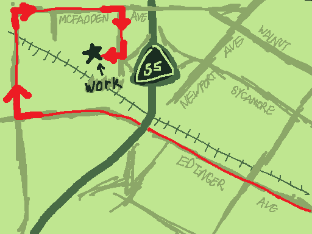
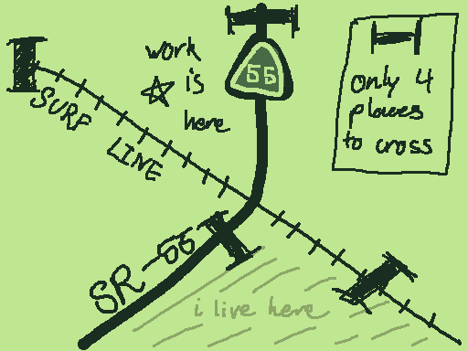
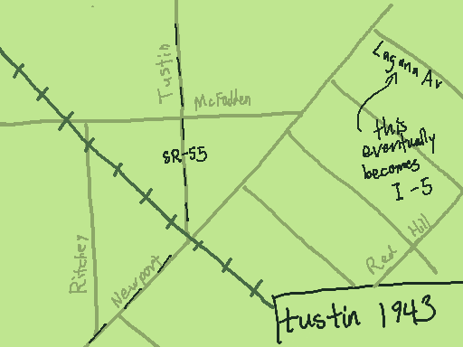
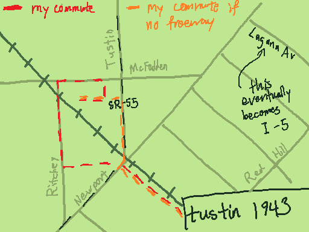
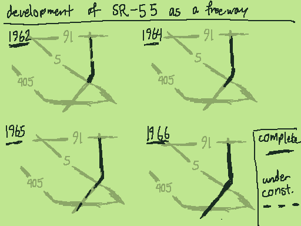

My commute to my current workplace is very strange. It takes the shape of a spiral, featuring 4 consecutive right turns:

Why is this the most efficient route for me to travel? Really, all it comes down to is that railroads and freeways are hard to cross.

My work sits at the intersection of California State Route 55 and the Surf Line Railroad. Geometrically, these two (approximate) lines on a plane divide the plane into four regions, and I happen to live in the region opposite from my work. So, I must cross the railroad and the freeway at least once each; it just so happens that the most convinient crossings create this weird route.
But how did these two obstacles come to be?
The history of the Surf Line is complex, and reaches back to the westward expansion of the U.S., and so I have made the decision to skip its history for now. (Maybe I will write another article in the future, but there are plenty of train nerds who have already done this.) So, I will focus on the 55 freeway, a much more localized, recent piece of infrastructure.
State Route 55 serves a vital role as the only North-South freeway corridor through Orange County, connecting the cities of central Orange County to the coast in Newport Beach.[1] It carries a massive amount of traffic daily, and (much to my frustration commuting to work from school) is constantly under construction and jammed.
The 55 freeway was not always a freeway. When researching for this article, I happened upon a very cool map[3] of Orange County in the 40s. The Surf Line railroad can be seen in exactly the same place it is today, but the 55 (as a freeway) is nowhere to be seen. In the place of its south half lies Newport Avenue, connecting the hills of what is now North Tustin to the coast. In the north part lies Tustin Avenue, connecting Tustin to Anaheim.

If the roads still looked like this, I'd just easily turn right on Newport then on Tustin, cross the train tracks, and be at work.

Before SR-55 was designated in 1934, these roads made up the southern portion of Legislative Route 43, which connected the Pacific coast in Newport Beach through to Riverside, continuing along what is now the 91 freeway. Through the 50s and 60s, as a response to increased travel demand, the route would be upgraded to a Freeway, gradually expanding north and south from I-5.[2]

At some point during this upgrade process, the ability for a driver to easily cross the Surf Line near route 55 was lost. As a result, my work commute is weird.
We tend to think of roads as permanent facts about our lives, but histories like this remind us that every road has an origin story. They expand, they shrink, politicians argue over them. There is a reason for the strange routes we have to take to work or school. The reasons are boring most of the time (in the case of SR-55 it was just that a North-South highway was needed), but are intertwined with local and global history (as was the case with the railroad's role in the expansion of the U.S.). It's fun to think about the way my life is connected to centuries of complex human history, even if it's through the mundane medium of traffic flow.
[1] SR-55 Background and History. California Department of Transportation, 2002. Retrieved 2026.
[2] State Route 55. California Highways, 2025. Retrieved 2026.
[3] The New Renie Atlas of Orange County and Cities, p100. California Blueprint & Map Co., 1943. This one's really cool, if you live in OC you should look at it!